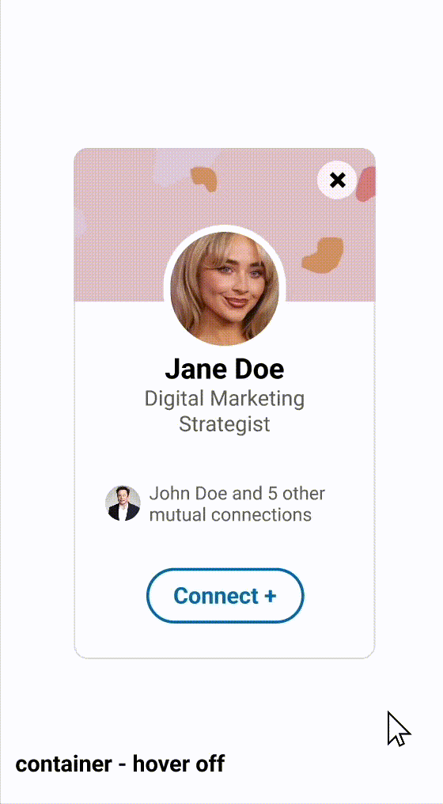

Container Design
The container serves as the structural backbone of the microinteraction. Its clean, minimalistic design
ensures that users can focus on the interactive elements without any distractions. The layout is deliberately simple
with adequate spacing around each element to avoid clutter. The layout is fully responsive to various screen sizes while
keeping the alignment and functionality intact. The design features a hover-on state with a drop shadow, as well as a
hover-off state. The cursor purposefully remains the same because this is not a button -- it is a space meant to hold the
actual buttons.

Connect (Default) Design + Connect (Active) Design
The "Connect" button in its default state is a key element of the interaction. It is designed to be large enough to grab
the user’s attention. The classic LinkedIn blue text and outline create strong contrast against the white container,
ensuring readability. The button size and padding are optimized for desktop, tablet, and mobile screens which makes it
touch-friendly on smaller devices. When the cursor changes to a pointer, a light blue animation slides to the right of the
button container on hover and slides back out to the left when the hover ends. Additional changes occur on mouse down when
the entire button fills with a light blue color to indicate it is being pressed. Finally, the text transitions from "Connect +"
to "Pending..." on mouse up.
The "Connect" button becomes active when "Pending..." is displayed, indicating a change in status. The color scheme remains
consistent with the default state -- blue text and outline on a white background. The same slide-in and slide-out animations
are applied to the hover states, just as with the default "Connect" button design. This state signals that the action has been
completed and is awaiting further processing. The button interactions remain consistent with the rest of the interface while
providing necessary status updates.
"X" Design
The "X" button serves as a secondary action for users who wish to dismiss a potential connection. Its design features a minimal
icon positioned strategically within the container, ensuring easy access without disrupting the visual flow. The size and color
contrast make it easily identifiable while maintaining a cohesive design with the rest of the interface. Since "X" buttons are
commonly associated with deletion, placing it in a less prominent area prevents accidental clicks. On hover, the "X" icon rotates
180 degrees forward and rotates back when the cursor leaves. It also darkens in opacity when pressed down, causing the container
to fade out as a new profile simultaneously slides in. This signals that the user has removed a potential connection and prefers
to view a different profile.
View Profile Design
The "View Profile" element is designed to enhance user navigation and provide additional functionality in a separate tab. Upon hover,
the text "View Profile" appears along the top curvature of the profile picture in white, creating a dynamic and visually appealing
interaction paired with a drop shadow. This design choice highlights the functionality of the profile image and hints at further
interactions during hover on, hover off, mouse down, and mouse up.